For the Atari 7800 · AstroCart
COSMIC ARC II
Alpha Ro Cluster
The Ark's ancient mission is over. Now the black market begins.
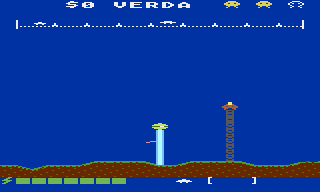
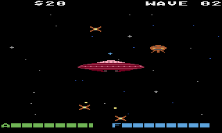
Contents
- The Story: After the Ark3
- Getting Started & Voyages4
- Controls5
- The Galaxy & Sector View6
- Star Chart & Close-Up7
- Starports: Trade & Bank8
- Starports: Bounty & Shipyard9
- Deep Space: The Screen10
- Deep Space: Ark & Fighter11
- Deep Space Threats & Escape Pod12
- Planets: The Screen13
- Planets: Shuttle & Beam14
- Worlds, Defences & Storms15
- Wildlife & The Relic16
- Achievements17
- Salvager's Strategy Guide18
- Captain's Log19
Saving: With a SaveKey or AtariVox in the second joystick port, your voyage is saved whenever you dock at a Starport or leave one, when a voyage begins, and when the Ark is lost. There's no need to save by hand.
2
After the Ark
Generations ago, the legendary Cosmic Ark finished its desperate rescue among the dying worlds of the old frontier. Its purpose fulfilled, the great ship was powered down, stripped of its beacons, and sealed inside a forgotten asteroid vault on the rim of the Alpha Ro Cluster.
It was supposed to rest there forever.
Then you found it.
A black-market salvager with more nerve than scruples, you cracked the vault, hotwired the Ark's warp core and fired up its tractor beam. Collectors, menageries and frontier barons pay fortunes for rare alien fauna, and Alpha Ro's failing sun means its worlds won't last. The Ark isn't a museum piece—it's the ultimate poaching rig.
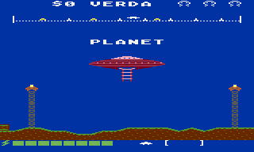
The Ark settling into orbit over Verda, its docking tunnel lowered.
Chart 64 sectors, raid alien worlds for creatures and ore, fight off pirate raiders and gunships, trade at 11 Starports, and hunt down the rumoured Relic. Build a fortune—or fill the Ark's manifest with a pair of every species.
3
Getting Started
Cosmic Arc II runs on an AstroCart cartridge, whose math unit and two POKEY sound chips the game needs. Plug a two-button joystick into the left port, and a SaveKey or AtariVox into the right one to keep your voyages. Switch on, and press fire on the title screen.
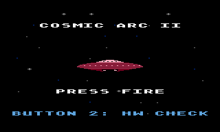
The title screen.
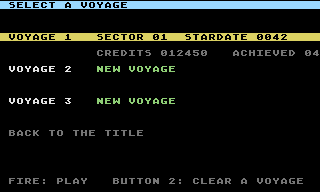
The voyage screen: three save slots.
The Voyage Screen
- Each slot shows its voyage's sector, stardate, credits and achievements. Move up and down to pick one; the cursor starts on your first saved voyage.
- Fire on a saved voyage carries on where you left it. Fire on NEW VOYAGE builds a fresh galaxy in that slot and starts you at Sector 01, home, with 500 credits and 100 energy.
- Button 2 on a saved voyage asks to clear it: fire to clear, button 2 to keep it.
- A slot marked DAMAGED couldn't be read back; fire starts a new voyage there.
No SaveKey? The title says NO SAVEKEY: NO SAVES, and fire goes straight into a new voyage that isn't kept. Button 2 on the title runs a check of the cartridge and SaveKey.
4
Controls
Everything is played with the joystick and its two buttons. Button 1 is fire (the button a one-button joystick has); button 2 is the other.
The Map & Starports
Joystick
Move the gold bar to a choice, or the cursor round the Star Chart. On the Bounty tab, left keeps a creature for the manifest.
Button 1
Choose: land, dock, warp (on the Star Chart too), buy, sell, upgrade, leave port.
Button 2
Next page: Sector → Chart → Close Up → Achieve, and round again. At a Starport, the next tab.
Deep Space
Joystick
Aim the Ark's laser (8 ways); with the fighter out, fly it.
Button 1
Fire the laser (hold for steady fire), or the fighter's twin blasters.
Button 2
Launch the fighter, and again to recall it.
Planets
Joystick
Hold down while docked to drop the shuttle out of the Ark; fly it; push straight up under the Ark's doorway to dock. During a storm, docked: aim and fire the Ark's laser up, left or right.
Button 1
The tractor beam (the shuttle flying low).
Button 2
Drop what the shuttle carries. Docked, hold it to leave the planet early.
5
The Galaxy & Sector View
Every voyage builds a new Alpha Ro Cluster: 64 sectors on a 12×8 grid, joined by warps. Sectors are numbered by their distance from home, and the further out you go, the higher the stakes:
| Tier | Sectors | Encounters | Notes |
|---|
| Safe Space | 01–10 | none | Home; ports with the Bank |
| Core | 11–15 | 30% | Light raids |
| Mid-Rim | 16–40 | 45% | Better prices, rarer creatures |
| Outer Rim | 41–64 | 60% | The richest ports, the Relic |
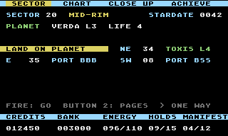
The Sector View: where you are, what's here, the way to each warp, your status.
- What's here: a Starport and its class, or a planet: its world, its level (L1–L5) and how many creatures are left (LIFE 4, or BARREN until they come back).
- Warps show their direction, the sector, and what's there once known (
??? before). A red > is a one-way warp: there's no warp straight back.
- Every warp moves the stardate on by one. An encounter may come on the way in, or as you leave a planet or port. Nebulae add 25% to the odds.
6
Star Chart & Close-Up
Press button 2 from the Sector View for the Star Chart: every sector you've visited and every one next to them. Press it again for the Close-Up, a closer look at the sectors round the Ark.
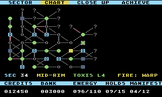
Star Chart: the cursor on sector 34, one jump away.
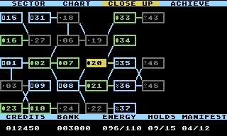
Close-Up: the sectors round the Ark, with their numbers.
Star Chart Symbols
Gold, blinking: the Ark
Cyan box: Starport
Green disc: planet
Blue check: nebula
Grey ring: empty sector
? seen, not yet visited
Grey lanes are warps both ways; red lanes are one-way warps. On the Close-Up, each box is a sector's number in its kind's colour, the Ark's in gold.
Warp from the chart: move the cursor onto a sector one jump from the Ark. The panel under the chart describes it and says FIRE: WARP; press fire to go. Fire on the Ark's own sector goes back to the Sector View.
7
Starports: Trade & Bank
Eleven Starports lie across the cluster. Each has a three-letter class (such as BSB) saying whether it Buys or Sells each of three goods, in order: Fuel Ore, Organics, Equipment. Home, Sector 01, buys everything (BBB); another port in Safe Space sells everything (SSS).
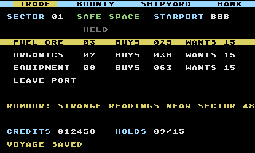
Trade: what you hold, the price, the port's stock.
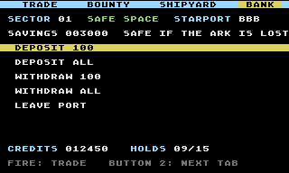
The Bank, at Safe Space's ports.
- Buy where it's made, sell where it's needed. A port that sells a good asks about three quarters of its value; one that buys it pays a quarter more, and more again the further out it is. Equipment pays best.
- Stock: each one you buy puts the price up, and a port can sell out; each one you sell brings its price down until it WANTS NO MORE. Ports recover a step every warp.
- Goods, ore crates and creatures in stasis all take holds: 10 to start.
- The rumour on the Trade tab points the way to the Relic.
- The Bank (Safe Space only): deposit or withdraw 100 at a time, or all. Savings are safe if the Ark is lost.
8
Bounty & Shipyard
Creatures your shuttle brings aboard wait in stasis, a hold each. On the Bounty tab, decide what each is worth to you:
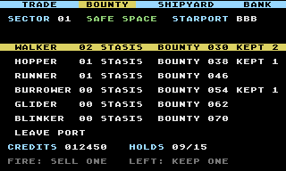
Bounty: in stasis, the bounty, kept for the manifest.
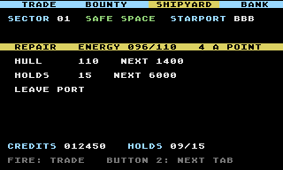
Shipyard: repairs and upgrades.
- Fire sells one for its bounty. Rarer kinds pay more, and ports further out pay up to two and a half times as much. A port that's bought many lately pays less: sell around.
- Left keeps one for the Ark's manifest: a pair of each of the six kinds, 12 in all. Kept creatures leave the holds for the Ark's own bays.
The Shipyard
- Repair energy to full: 4 credits a point in Safe Space, up to 8 in the Outer Rim.
- Hull: +5 most energy, ready filled (from 1,000 credits, 200 more each time), up to 200.
- Holds: 10 → 15 (3,000) → 20 (6,000).
9
Deep Space: The Screen
Outside Safe Space, a warp—or leaving a planet or port—can run into an encounter: asteroids and pirates closing on the Ark. Its wave is as strong as the jumps back to Safe Space, from 1 to 10. Clear everything to go on.
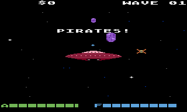
PIRATES! Rocks come in along the Ark's eight lanes; the pirates don't.
1
2
3
4
1
Credits aboard. Pirates pay a bounty when destroyed.
2
Wave: the encounter's strength.
3
A: the Ark's energy—its shields and its laser's power. Gold under half, red under a quarter. At zero, the Ark is lost.
4
F: the fighter's tether, or REPAIR while the Ark builds a new fighter.
10
Ark & Fighter
The Ark's Laser
The joystick aims the Ark's laser along one of eight lanes, and fire sends bolts down it. Rocks only ever come in along those lanes. Each bolt costs 1 energy and each kill pays 1 back, so careful shooting breaks even; misses and hits on the hull are what cost you.
Large rocks break into two medium, and medium into two small, all carrying on down the same lane.
The Fighter
Pirates keep off the lanes, so button 2 launches the fighter, a fast little saucer:
- It flies the way you push and fires twin blasters, free of charge. It wraps round the screen's edges.
- The Ark's auto-turret takes over while it's out, firing in the eight directions at the nearest threat.
- The fighter runs on its tether (about 13 seconds); hits come off it too. Press button 2 to recall it: it flies itself home, and nothing can touch it on the way. Docked, it recharges in about 3 seconds.
- Only the fighter can collect salvage pods.
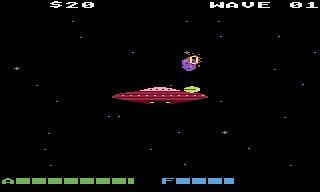
The fighter out among the rocks.
Tip: A rock destroys the fighter outright, and the fighter's blasters need two hits for a rock. Leave rocks to the Ark; the fighter is for pirates.
11
Deep Space Threats
Asteroids (L / M / S) 16 / 12 / 8 damage
Tumble in along the eight lanes, faster each wave. A rock hurts whatever it hits: the Ark, the fighter, even pirates.
Raider 10 credits
Fast and nimble: circles the Ark and shoots, and sidesteps rocks. Send out the fighter.
Gunship 25 credits
From wave 2: parks between the Ark's lanes, out of the laser's reach, and launches missiles.
Missile 12 damage
Homes in on the Ark. Shoot it down on the way.
Salvage Pod +16 energy
One pirate in four leaves one behind. Fly the fighter through it before it drifts away.
PIRATES! When a wave's pirates arrive, only small rocks come for the next 20 seconds: your chance to launch the fighter. Then the big rocks return.
Escape Pod: If the Ark's energy runs out (in deep space or on a planet), the pod gets you home to Sector 01 in a new Ark with a tenth of your credits. Lost: cargo, creatures, kept specimens, upgrades. Kept: the Bank, the chart, your achievements.
12
Planets: The Screen
Choose LAND ON PLANET in a planet's sector and the Ark drops into orbit, hanging over one spot of a world that wraps all the way round. Its creatures roam below, and its defence towers stand guard.
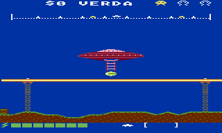
The towers' guns fire a pulse right across the screen. Don't be at its height.
1
2
3
4
1
Credits aboard.
2
The world's name.
3
The scanner (the second row): the whole planet, the Ark, the towers, the creatures, the shuttle and the storm's rock.
4
Creatures: one icon each, filled in yellow once caught.
5
6
7
5
The Ark's energy.
6
The shuttle (a red cross while a new one is built).
7
The shuttle's bay: empty, a creature, or ore.
13
Shuttle & Tractor Beam
- Launch: docked inside the Ark, hold down and the shuttle drops out of the tunnel by itself.
- Find them: the scanner shows where the creatures are. The shuttle stays in the middle of the screen while the ground scrolls under it.
- Beam: fly low over a creature and hold button 1. The shuttle stops dead and the beam reaches the ground.
- Hold on: a creature in the beam struggles to slip out sideways. Keep it under you until it's aboard.
- Dock: get under the Ark's doorway and push straight up: the shuttle flies itself up the tunnel. Each creature delivered gives the Ark 12 energy.
The beam lifting a creature on Verda.
- Ore crates are heavy: the shuttle crosses at half speed while carrying one. Each holds 5 fuel ore for your holds. Button 2 drops a load.
- The shuttle carries one thing at a time, and the beam won't lift a creature when the holds are full.
- Leaving early: docked, hold button 2. The count goes LEAVING IN 3, 2, 1; fire or the joystick stops it. Not once a storm is coming.
14
Worlds, Defences & Storms
Six Worlds, Five Levels
Planets come in six kinds of world—VERDA, RUBRA, GLACI, UMBRA, ARENA and TOXIS—and at levels L1 to L5. Two sectors in every five have a planet, so there are some at every stage of a voyage. Level rises with the distance from home: harder defences, rarer and better-paid creatures.
Every creature you take is one fewer on that world; one returns every 3 warps. A world with none left is BARREN and can't be landed on.
The Towers
A tower stands every so often round the planet, its gun riding up and down. All the guns move as one, covering the whole band the shuttle flies in. Before each pulse they flash; then a pulse crosses the screen at their height. A shuttle it touches is destroyed, its cargo falls, and the Ark loses 12 energy while it builds another. Pulses come at no fixed rhythm: watch the flash.
The Storm
- About 45 seconds after you arrive, a klaxon sounds: STORM COMING. Ten seconds later a rock comes for the Ark, from above, the left or the right (! on the scanner).
- Get the shuttle home. Docked, the joystick and fire aim the Ark's laser up, left or right: shoot the rock down for ALL CLEAR.
- If it hits, the Ark loses 16 energy, and a shuttle still outside is lost with its cargo. Either way, the planet is done.
All caught: catch every creature on a planet and dock for PLANET CLEAR.
15
Wildlife & The Relic
Six kinds of creature live in Alpha Ro, two to four on a planet. The low-level worlds near home have the common kinds; the rarer, better-paid ones live out in the rim. Each reacts when the shuttle comes low overhead:
WALKERTurns about and hurries off. Bounty from 30.
HOPPERJumps away from the shuttle. From 38.
RUNNERSprints for it. From 46.
BURROWERDashes away along the ground. From 54.
GLIDERFloats above the ground, bobbing up and down. From 62.
BLINKERAlways quick and twitchy. Outer rim only. From 70.
Bounties shown are Safe Space's; the further out you sell, the more they pay.
Ore Crate 5 fuel ore
Sits on the ground waiting. Heavy in the beam; sell the ore where a port buys it.
The Relic 2,000 credits
Somewhere in the Outer Rim. Every port's rumour names a sector next to it, and its own sector shows a RELIC SIGNAL. It shimmers in the beam and is very heavy. Bring it to any port; lose the Ark and it's back where you found it.
16
Achievements
There's no single way to win: the voyage goes on as long as you like. Instead there are 16 achievements, on the ACHIEVE page (button 2 from the Close-Up). Earned ones light up in colour; the joystick picks one to see what it takes and how far along you are. Each voyage keeps its own.
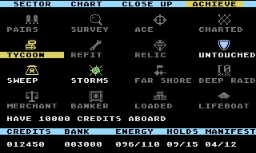
| Name | Takes | Name | Takes |
|---|
| PAIRS | A pair of every kind kept | SWEEP | Catch all on a planet, none lost |
| SURVEY | One of each kept by stardate 150 | STORMS | Shoot down 5 storm rocks |
| ACE | Destroy 50 pirates | FAR SHORE | Reach Sector 64 |
| CHARTED | Visit every sector | DEEP RAID | Survive a wave 10 encounter |
| TYCOON | 10,000 credits aboard | MERCHANT | Sell 50 goods at ports |
| REFIT | Every hull and hold upgrade | BANKER | 5,000 in the Bank |
| RELIC | Bring the Relic to a port | LOADED | Fill 20 holds |
| UNTOUCHED | Clear an encounter without a hit | LIFEBOAT | Get home in the escape pod |
17
Salvager's Strategy Guide
- Start with a trade run. Buy at the Safe Space port that sells everything and sell at home, which buys everything. It's safe money while you learn.
- Carry goods outward. Ports further out pay more for what they need. Fill your holds before heading for the rim and the trip pays for itself.
- Bank before you go deep. Lose the Ark and you keep only a tenth of the credits aboard, but every credit in the Bank.
- Buy hull early. More energy means more mistakes survived, in deep space and in storms.
- The fighter is for pirates. The Ark's laser handles rocks. Launch when PIRATES! flashes, recall when the tether runs low—a recalled fighter is untouchable.
- Count the pulse. On a planet, beam between pulses, and when the guns flash, change height.
- Watch the clock in orbit. When STORM COMING sounds, head home: a docked shuttle can't be lost, and the Ark's laser can save the day.
- Sell around. A port that's bought many creatures lately pays less. Spread your sales, and remember to keep a pair of each for the manifest.
- Mind the red lanes. One-way warps on the charts (and > in the Sector View) have no way straight back. Check the Close-Up for another route home.
Manifest tip: on the Bounty tab, push left to keep a creature; fire sells it.
18
Captain's Log
Record good trade runs, the Relic's whereabouts, and your favourite hunting worlds:
19
Cosmic Arc II
The Ark was built to save the galaxy. You found a more profitable use for it.
- A new 64-sector galaxy every voyage, with a Star Chart and Close-Up
- Deep space battles against asteroids, raiders and gunships, with the Ark's laser and the fighter
- Six worlds and six kinds of creature to beam aboard, defence towers and meteor storms
- 11 Starports: trade, bounties, the shipyard and the Bank
- Three saved voyages on a SaveKey, 16 achievements, music on two POKEYs
COSMIC ARC II: ALPHA RO CLUSTER
For the Atari 7800 with the AstroCart (math unit, two POKEYs). Two-button joystick; SaveKey or AtariVox for saves.
Inspired by Rob Fulop's 1982 Cosmic Ark.